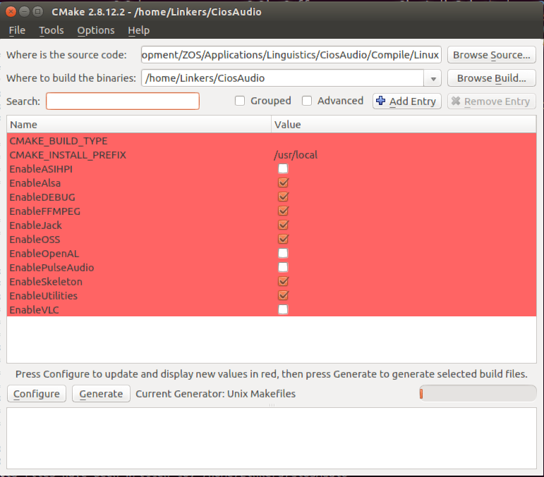
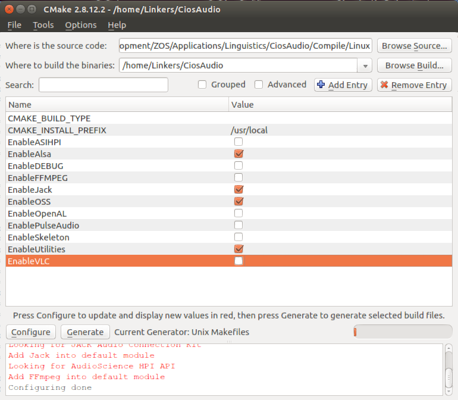
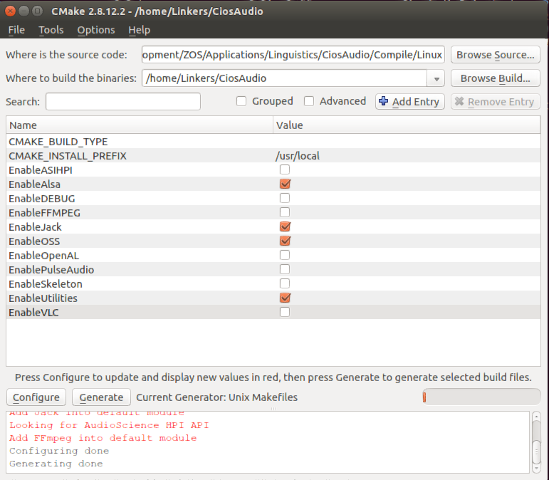

Compilation on Linux
It is easy to compile the CIOS Audio Core when the environment is ready:|
mkdir BuildCiosAudioCore |
Modify settings
|
mkdir BuildCiosAudioCore |

Configure

Generate

|
cd BuildCiosAudioCore |